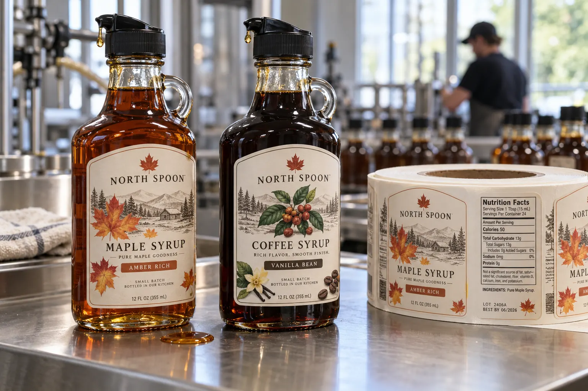

Trace the drip before drawing the front panel
A syrup label is not just a small poster on a bottle. It is handled after every pour. I ask a buyer to fit the actual cap, pour a little product and watch the run-down path. A label directly below a badly controlled spout can be wiped again and again. No attractive finish saves a product name that becomes unreadable after use.
HERMA describes protective varnish or lamination for glass-jar labels and distinguishes wipeable film from unprotected paper. That is a material starting point, not proof that a specific syrup, cleaner or cap will leave a particular printed label unchanged.
One bottle shape, two very different jobs
Imagine a composite maple-syrup producer selling a small table bottle and a larger refill bottle. The small one is handled at breakfast; the refill may live in a cafe bar. I would check both: the bar bottle is wiped more often, and its wider panel may tempt the designer to place the batch code too close to a handle or shoulder.
A second composite coffee-syrup brand wants one common front label across caramel and vanilla variants. I would keep the variant word large enough for a barista to recognize quickly, while putting variable batch data on a consistently flat side or back area. Shrinking everything for a shared die is not a saving if staff confuse flavors.
Use a drip-and-wipe trial
Label filled bottles at the intended application condition. Pour a controlled small amount, let a realistic drip contact the finished label edge and face, then wipe with the normal service method. Look for smearing, tacky print, edge lift and loss of contrast. Repeat after ordinary storage. If the bottle is glass in one run and PET in another, approve each construction separately.
| Zone | Check |
|---|---|
| Pourer and neck | Likely syrup run-down path |
| Front label | Name after repeated wiping |
| Side/back | Lot and code accessibility |
| Substrate | Glass or plastic bond |
Our buying view
Spend on protection where handling is real
I would preserve a tactile paper only if it passes the service trial. For a bottle that is wiped all day, a different face or finish is often a better compromise than a label that wins only in the studio.
What to send for the quote
- Filled bottle and final pour cap.
- Substrate, label panel and expected wipe method.
- All flavors and variable lot/code fields.
- Quantity, roll direction and application method.
Compare sauce-bottle oil exposure and lamination choices for other ways a finish can be tested.
Frequently asked questions
Can a paper label work on syrup bottles?
Potentially, with an appropriate protective finish and a successful drip-and-wipe test on the finished bottle.
Does a pour cap change label placement?
Yes. Inspect where liquid runs down the bottle and keep critical copy out of the most exposed path where practical.
Should the same material be used for glass and plastic?
Not without testing both substrates and the actual application conditions.
Related buyer guides
Review your label specification
Send package photos, label dimensions, material details, quantity and application conditions. Include good and failed samples where possible so the discussion starts with evidence.